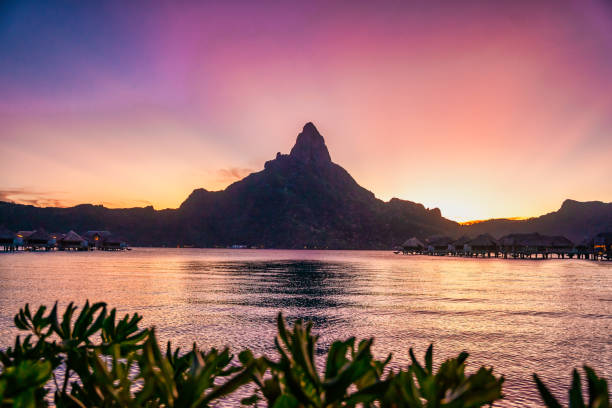

Бора-Бора — остров вулканического происхождения, который расположен в 230 км к северо-западу от Таити. Где самая красивая природа в мире? Travel Guide называет Бора-Бора самым красивым островом в мире и отмечает, что вершины гор Отеману и Пахия, возвышающиеся над островом, делают красоту острова уникальной.